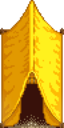
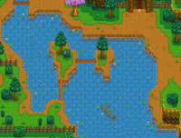
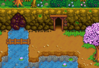
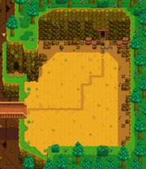

Die Berge
Zur Navigation springen
Zur Suche springen
Die Berge sind die Region im Norden von Pelikan Stadt. Im Westen gibt es einen Ausgang zu dem Zundersaftwald, eine Route, die mit dem Hof verbunden ist. Durch einen Pass im Norden gibt es eine Verbindung zur Eisenbahn. Dieser ist zunächst verschüttet, bis am dritten Tag des Sommers im ersten Jahr durch ein Erdbeben das Geröll verschwindet.
Wichtige Orte
| Bild | Name | Beschreibung | Bewohner |
|---|---|---|---|
 |
Schreinerladen | Bergstraße 24
Im Westen liegt der Schreinerladen, der von Robin betrieben wird. Ihr Ehemann Demetrius und ihre Kinder Maru und Sebastian leben auch hier im Haus. |
|
 |
Zelt | Nordöstlich des Schreinerladens. Hier lebt Linus und verbringt viel von seiner Zeit. | |
 |
Bergsee | Ein Bergsee, der die Gegend teilt, ist nur nach Norden hin überbrückt. Zu Beginn des Spiels wird der Weg jenseits des Sees durch einen Erdrutsch blockiert. Dies wird nach einigen Tagen verschwinden. | |
 |
Minen | Oberhalb des Sees liegt der Eingang zu den von Monstern heimgesuchten Minen, die zugleich die primäre Quelle von Stein und Erzen für die Stadt ist. | |
 |
Abenteurergilde | Etwas weiter auf dem Weg nach den Minen. Marlon und Gil wohnen hier. Sobald der Zugang frei ist, bietet die Gilde einen Laden, der bestimmte Waffen, Schuhe und Ringe verkauft und Monsterkomponenten kauft. | |
 |
Steinbruch | Ein großer Bereich jenseits der zerstörten Brücke, wo Stein- und Erzlagerstätten jeden Tag neu entstehen. Der Zugang wird nach Beendigung des Handwerker-Bündels im Gemeinschaftszentrum freigeschaltet. |
Ereignisse
| Ereignis | Zeitpunkt | Beschreibung |
|---|---|---|
| Lachsbeeren-Saison | 15. - 18. |
Sträucher können "verwendet" werden, um Lachsbeeren zu erhalten. |
| Erdbeben | 3. |
Ermöglicht den Zugang zur Eisenbahn und zum Spa. |
| Brombeeren-Saison | 8. - 11. |
Sträucher können "verwendet" werden, um Brombeeren zu erhalten. |
| Brückenreparatur | Alle Handwerker-Bündel vervollständigt. | Brücke zum Steinbruch wird repariert. |
| Entfernung des glitzernden Felsens | Alle Aquarium-Bündel vervollständigt | Geröll, dass den Wasserfluss links vom Minen-Eingang blockiert, wird entfernt |
Fischen
- Siehe Fischen Strategie
| Gebiete | |
|---|---|
| Gebiete | Berge • Bushaltestelle • Calico-Wüste • Eisenbahn • Friedhof • Geheime Wälder • Gipfel • Hexensumpf • Hof • Hofteich • Höhle • Ingwerinsel • Kanalisation • Loren • Minen • Mutantenkäferhöhle • Pelikan Stadt • Schädelhöhle • Steinbruch • Steinbruchmine • Strand • Tunnel • Vulkan-Dungeon • Wäldchen • Zundersaftwald |